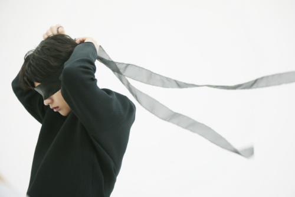
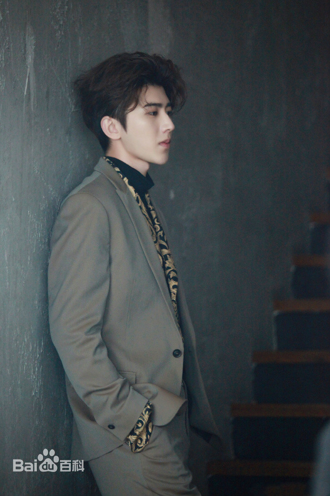
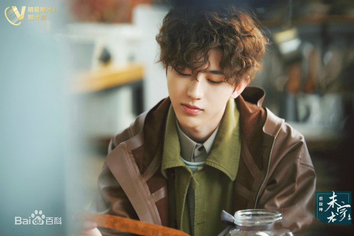
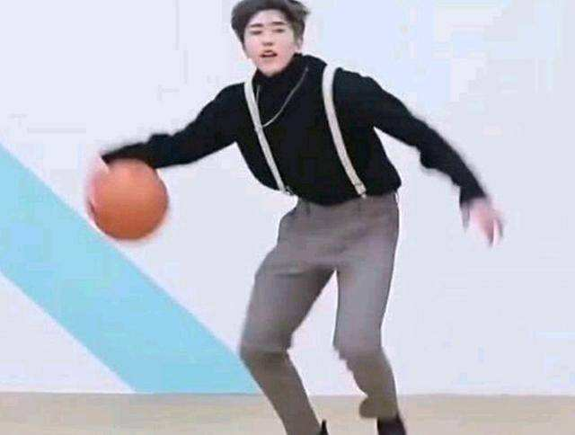

蔡徐坤（KUN），1998年8月2日出生于浙江温州，籍贯湖南怀化，中国内地男歌手、演员、音乐制作人。
蔡徐坤出生于浙江温州，爸爸是浙江温州人，妈妈是湖南人。童年时代，在湖南怀化生活就学。
[24-25]13 岁时，与央视主持人鞠萍姐姐同台主持"红领巾之歌"全国少儿优秀合唱歌曲征集展播活动启动仪式。
[26]  返回2012年4月，参加湖南卫视综艺节目《向上吧！少年》，进入全国前200强，此后开始接触演艺活动 [1] 。8月，参演偶像剧《童话二分之一》，饰演少年御风一角 [2] 。随后，又参演都市情感剧《女刑警李春春》，饰演西西一角。
[27]2014年3月4日，客串出演的爱情悬疑喜剧电影《完美假妻168》在中国大陆上映，饰演男主角霍克的少年时期，这也是他个人的首部电影。
2015年7月10日，参加安徽卫视青春励志榜样养成类真人秀《星动亚洲》，进入全国前15强 [28] ，于8月与前15强前往韩国进行三个月封闭训练 [29] ；9月，回到中国录制安徽卫视中秋晚会
[30] 。2016年10月18日，加入男子组合SWIN，并担任音乐小分队SWIN-S的高音RAP [31] 。12月，随SWIN-S发行首张迷你专辑《New World》，收录包括《Fantasy》《明日路》等5首歌曲
[32] 。2017年3月，参演网易漫画真人漫改剧《我才不会被女孩子欺负呢》，饰演男主角叶麟，该剧于2018年4月12日优酷独播。
[33-34]2018年1月，参加爱奇艺偶像男团竞演养成类真人秀《偶像练习生》。4月6日，在《偶像练习生》总决赛中，获得最高票数，并以NINE PERCENT九人男团C位出道 [3] 。8月2日，发行个人首张EP《1》，该张专辑融合了Future R&B/Urban R&B等多种不同风格的元素，共包含《Pull up》《You can be my girlfriend》《It’s you》三首单曲 [4] 。8月19日，获得出道后首个个人音乐类奖项亚洲新歌榜2018年度盛典“最受欢迎潜力男歌手”，总票数达1309万票 [5] 。8月23日，发行单曲《Wait Wait Wait》 [6] 。9月，参加爱奇艺《中国音乐公告牌》原创音乐舞台秀，并且自编solo舞蹈，全程参与制作 [35] 。12月30日，他还参加了浙江卫视跨年演唱会
[36] 。2019年1月19日，蔡徐坤在牙买加大使馆被授予“中牙友好大使暨中牙杰出青年领袖人物”称号，以更多触角促进中牙友好交流 [10] ；随后，作为新生力量代表担任了北京电视台春节联欢晚会的代言人 [11] ，并为晚会创作歌曲《那年春天》，而晚会播出后则取得了CSM城网同时段收视第一、全国各卫视春晚收视冠军的成绩 [37] ；2月18日，单曲《没有意外》上线 [12] 。3月22日，海外公演主题曲《Bigger》上线 [13] 。；4月及5月，完成首次海外公演《ONE》（共6站：伦敦、纽约、洛杉矶、旧金山、多伦多、温哥华） [38] 。4月19日，单曲《Hard To Get》上线 [14] 。7月26日，发行专辑《YOUNG》 [15] 。8月9日，该EP的销售额在QQ音乐突破3000万，成为QQ音乐平台首张销售额破3000万的数字专辑。9月26日，随NINE PERCENT发行音乐专辑《限定的记忆》，专辑收录其个人原创歌曲《梦》 [39] 。10月6日，NINE PERCENT组合合约到期正式解散 [17] 。11月15日，单曲《重生》上线 [18] 。12月5日，与佟丽娅合唱2022北京冬奥会推广曲《冬梦飞翔》 [40] 。12月8日，担任第二届海南岛国际电影节青年宣传使者
[41-42] 。2020伊始，身为湖南人的蔡徐坤担任了湖南卫视春晚家乡推荐官，并在晚会演唱歌曲《重生》 [43-44] ；3月12日，其作为青春制作人代表加盟的青年励志综艺《青春有你第二季》开播 [19] ，随后，他还与佟丽娅共同合唱抗疫公益歌曲《山河无恙在我胸》 [45] ；4月9日，蔡徐坤为抗疫创作的原创公益歌曲《Home》上线，这是他出道以来的第14支单曲 [46] ；同月，他还开始担任户外竞技真人秀《奔跑吧第四季》的常驻嘉宾 [20] ；5月24日，蔡徐坤发行自己全面参与制作的单曲《情人》 [47] ；7月19日，获得第27届东方风云榜最佳男歌手、亚洲人气歌手及网络影响力三个奖项
[48] 。  返回YOUNG 2019-07-26 普通话 1 2018-08-02 普通话/英语 NEW WORLD 2016-10-19 普通话 Home （抗疫公益歌曲、作词、作曲、演唱） 2020-04-09 山河无恙在我胸 （抗疫公益歌曲,与佟丽娅合唱） 2020-03-24 冬梦飞翔 （2022北京冬奥会推广曲,与佟丽娅合唱） 2019-12-05 重生 （作词、制作、演唱） 2019-11-15 Hard To Get （作词、作曲、制作、演唱） 2019-04-19 Bigger （作词、作曲、制作、首支EDM,海外公演主题曲） 2019-03-22 没有意外 （作词、演唱） 2019-02-18 一起笑出来 （电影《神探蒲松龄》主题曲,与成龙合唱） 2019-02-09 那年春天 （参与作词、作曲、演唱,2019北京春晚） 2019-02-05 Wait Wait Wait （作词、作曲、演唱、和声编写） 2018-08-23 1/2 参考资料： [18] [40] [45] [49-50] 参演电视剧 我才不会被女孩子欺负呢2018-04-12 饰演叶麟 导演陈鹏 主演卢洋洋, 王咨越, 杨景诚 童话二分之一2012-08-27 饰演少年杜御风 导演张哲书, 文谦 主演张钧甯, 李浚赫, 朱梓骁 女刑警李春春2012 饰演西西 导演田卓, 马骁 主演陈小艺, 刘晓虎, 温兆伦 参演电影
完美假妻1682014-03-04 饰演少年霍克 导演刘镇伟 主演徐若瑄, 何炅, 王学兵 综艺节目 播出时间 节目名称 简介 2020-05-29 奔跑吧第四季[53] 常驻嘉宾MC 2020-03-12 青春有你第二季[19] PD 2019-12-31 江苏卫视2020年跨年演唱会[54] 《YOUNG》、《It'you》、《重生》三首联唱 2019-10-10 限定的记忆[55] NINE PERCENT团综 2019-09-14 快乐大本营 演唱《YOUNG》 2019-09-07 快乐大本营 演唱《没有意外》，舞台首秀 2019-08-31 快乐大本营 演唱《Pull Up》，卫视首秀 2019-08-30 遇见天坛[56] ---- 2019-07-27 芒果TV青春芒果夜 《YOUNG》《蒙着眼》舞台首秀 2019-06-28 湖南卫视巅峰之夜[57] 《HardToGet》舞台首秀、演唱《It's You》 2019-02-05 北京卫视春节联欢晚会[58] 演唱《那年春天》 2019-02-05 “四海同春”2019全球华侨华人春节大联欢[59] 压轴演唱《Wait Wait Wait》 2019-02-04 甜蜜的任务[60] ---- 2018-12-31 东方卫视2019跨年演唱会[61] 炫酷舞台 《It's You》《You Can Be My GrilFriend》 2018-12-30 浙江卫视领跑2019演唱会[62] 跨年首秀，演唱《You can be my girl friend》、《Wait Wait Wait》 2018-10-19 浙江卫视秋季盛典[63] 《Wait Wait Wait》卫视首秀
 返回2018年11月，蔡徐坤及其粉丝获得“2018社会力量参与救灾先进单位”荣誉纪念
[68] 。2019年1月9日，蔡徐坤被授予中牙友好大使暨中牙杰出青年领袖人物 [10] 。1月18日，蔡徐坤成为首位NBA新春贺岁形象大使 [69] 。5月12日，出席中国天气网协办的2019“向灾害SAY NO”暨小小减灾官全国公益科普活动，正式担任中国扶贫基金会减灾形象大使
[70] 。2019年10月17日，与中国儿童少年基金会设立“葵计划”爱心基金，蔡徐坤工作室首批捐赠善款60余万元，3年内捐赠300万元，并被中国儿童少年基金会特授予“春蕾计划促进女童保护爱心大使”荣誉称号
[71] 。 返回蔡徐坤是一位阳光帅气的“小鲜肉”，同时也拥有漫画美少年般的正太形象
[89]在蔡徐坤的写真中，他以一身酒红色的毛衣搭配白裤，突显了浓浓的冬日气息。凭借着不俗的颜值和唱跳俱佳的能力征服了很多少女粉丝的心
[90] [91] 。在这个颜值当道的时代，蔡徐坤的横空出世可谓锦上添花，他如同漫画中走出来的美少年，同时有着成为世界巨星的潜质，唱跳能力俱佳，斩获《偶像练习生》冠军出道，在被误认为是韩国偶像明星之时，一句“We are Chinese”获赞无数，一夜成名，众望所归
[92] 。  返回